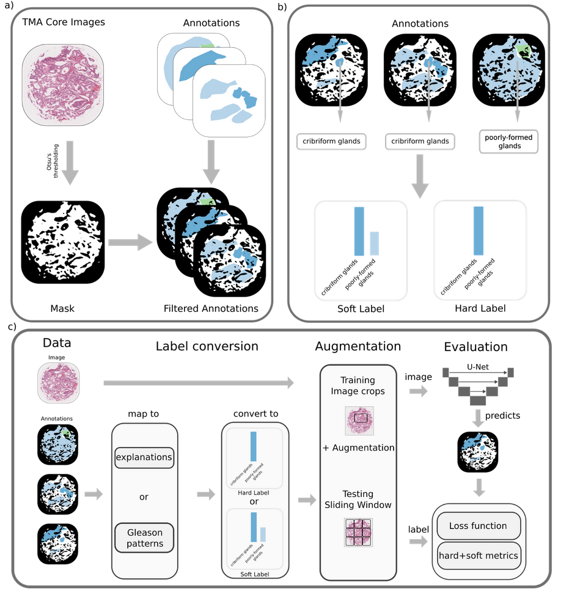
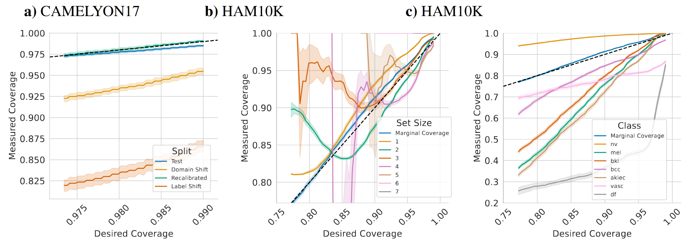
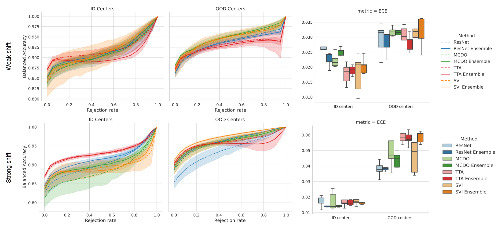
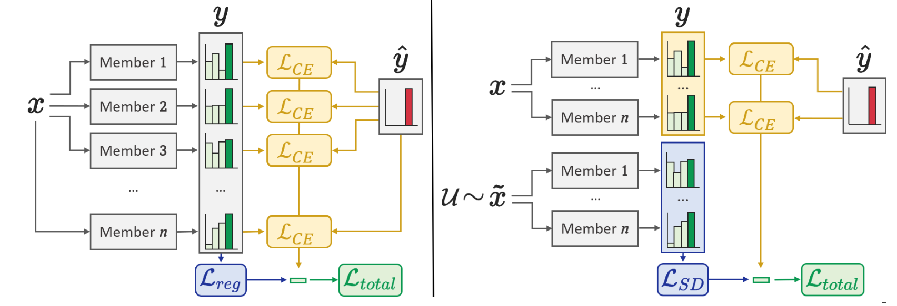

Pathologist-like explainable AI for interpretable Gleason grading in prostate cancer
Abstract: The aggressiveness of prostate cancer, the most common cancer in men worldwide, is primarily assessed based on histopathological data using the Gleason scoring system. While artificial intelligence (AI) has shown promise in accurately predicting Gleason scores, these predictions often lack inherent explainability, potentially leading to distrust in human-machine interactions. To address this issue, we introduce a novel dataset of 1,015 tissue microarray core images, annotated by an international group of 54 pathologists. The annotations provide detailed localized pattern descriptions for Gleason grading in line with international guidelines. Utilizing this dataset, we develop an inherently explainable AI system based on a U-Net architecture that provides predictions leveraging pathologists' terminology. This approach circumvents post-hoc explainability methods while maintaining or exceeding the performance of methods trained directly for Gleason pattern segmentation (Dice score: 0.713 \pm 0.003 trained on explanations vs. 0.691 \pm 0.010 trained on Gleason patterns). By employing soft labels during training, we capture the intrinsic uncertainty in the data, yielding strong results in Gleason pattern segmentation even in the context of high interobserver variability. With the release of this dataset, we aim to encourage further research into segmentation in medical tasks with high levels of subjectivity and to advance the understanding of pathologists' reasoning processes.


- Under review at Nature Communications

Pitfalls of Conformal Predictions for Medical Image Classification
Abstract: Reliable uncertainty estimation is one of the major challenges for medical classification tasks. While many approaches have been proposed, recently the statistical framework of conformal predictions has gained a lot of attention, due to its ability to provide provable calibration guarantees. Nonetheless, the application of conformal predictions in safety-critical areas such as medicine comes with pitfalls, limitations and assumptions that practitioners need to be aware of. We demonstrate through examples from dermatology and histopathology that conformal predictions are unreliable under distributional shifts in input and label variables. Additionally, conformal predictions should not be used for selecting predictions to improve accuracy and are not reliable for subsets of the data, such as individual classes or patient attributes. Moreover, in classification settings with a small number of classes, which are common in medical image classification tasks, conformal predictions have limited practical value.

Benchmarking common uncertainty estimation methods with histopathological images under domain shift and label noise
Abstract: In the past years, deep learning has seen an increase in usage in the domain of histopathological applications. However, while these approaches have shown great potential, in high-risk environments deep learning models need to be able to judge their uncertainty and be able to reject inputs when there is a significant chance of misclassification. In this work, we conduct a rigorous evaluation of the most commonly used uncertainty and robustness methods for the classification of Whole Slide Images, with a focus on the task of selective classification, where the model should reject the classification in situations in which it is uncertain. We conduct our experiments on tile-level under the aspects of domain shift and label noise, as well as on slide-level. In our experiments, we compare Deep Ensembles, Monte-Carlo Dropout, Stochastic Variational Inference, Test-Time Data Augmentation as well as ensembles of the latter approaches. We observe that ensembles of methods generally lead to better uncertainty estimates as well as an increased robustness towards domain shifts and label noise, while contrary to results from classical computer vision benchmarks no systematic gain of the other methods can be shown. Across methods, a rejection of the most uncertain samples reliably leads to a significant increase in classification accuracy on both in-distribution as well as out-of-distribution data. Furthermore, we conduct experiments comparing these methods under varying conditions of label noise. Lastly, we publish our code framework to facilitate further research on uncertainty estimation on histopathological data.

Improving Robustness and Calibration in Ensembles with Diversity Regularization
Abstract: Calibration and uncertainty estimation are crucial topics in high-risk environments. We introduce a new diversity regularizer for classification tasks that uses out-of-distribution samples and increases the overall accuracy, calibration and out-of-distribution detection capabilities of ensembles. [...]